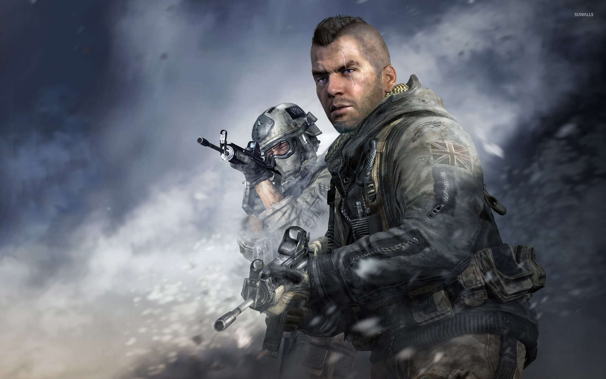
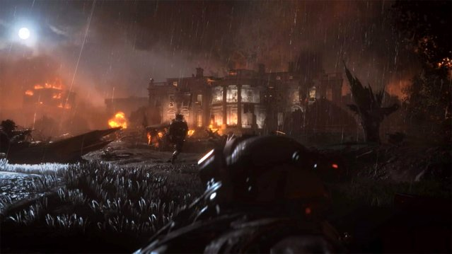
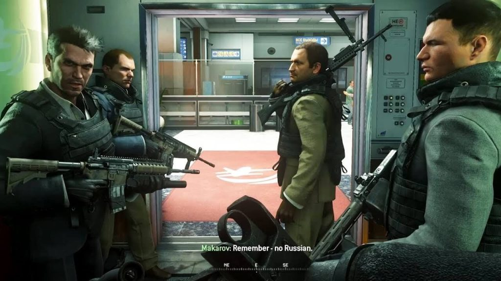
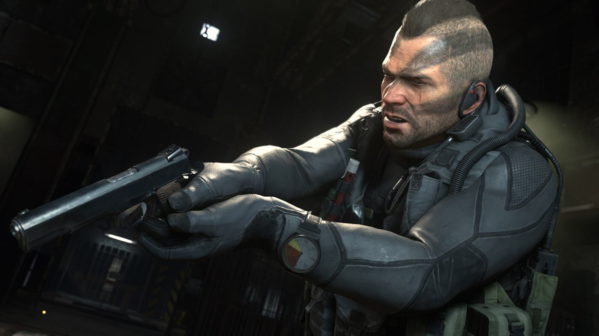

Call Of Duty
Call Of Duty ve Hikayesi
İlk Modern Warfare’de Rus aşırı milliyetçileriyle kapışıyorduk, hatırlayacak olursanız. Oyun bir köprünün üzerinde ucu ucuna kurtarılmamızla son buluyordu. Modern Warfare 2, ilk oyunun bıraktığı yerden beş yıl sonrasını konu alıyor. Amerikan Ordusu ve İngiliz Özel Kuvvetleri’nin tüm çabalarına rağmen aşırı milliyetçi güç odakları Rusya’nın kontrolünü ele geçirip Imran Zakhaev’i bir kahraman ve şehit olarak ilan ediyorlar. Bu sıradaysa Zakhaev’in eski üst düzey askerlerinden biri olan Vladimir Makarov birkaç saldırı ile Avrupa üzerinde korku rüzgarları estirmeye başlıyor. Oyun, er Allen’ın Afganistan’da bir şehri silahlı milislerden kurtarması ile başlıyor. Allen böylece komutanlarından biri olan General Shepherd’ın dikkatini çekiyor ve CIA’de komuta altına alınıyor. Allen olarak Makarov’un ordusuna kimliğimizi değiştirerek gönderiliyoruz ve buradan itibaren film fena halde kopuyor. Infinity Ward, ilk oyunda sevdiğimiz ne varsa katbekat fazlasını eklemeyi başarmış bu oyuna ve üzerine birkaç güzel yenilik eklemiş. Örneğin, artık çift silah taşıyabiliyoruz. (Sadece tabanca sınıfı silahları.) Elbette sadece bu kadar değil, yapay zeka da ciddi şekilde geliştirilmiş. Sizin omuz omuza savaşan askerlerin yapay zekası tatminkar düzeyde. (Zaman zaman aptallaşsalar da en azından koruma ateşi sağlayabiliyorlar.) Fakat düşmanların zekaları gözle görülür şekilde geliştirilmiş. Plan yapıyor, saklanıyor, ani çıkışlar yapıyor ve sizi bir şekilde gafil avlamayı başarıyorlar. Özellikle zorluk seviyesini yukarı çektiğiniz takdirde size kabus gördürecek kadar zorlayabiliyorlar. Infinity Ward’un bu konudaki çabasını takdir etmek gerek zira bir önceki Modern Warfare’de de yapay zeka hiç fena değildi, yine de yan gelip yatmamış ve bize daha gerçekçi bir oyun tecrübesi sunmak için emek vermişler. Tek kişilik senaryo son derece heyecanlı, gerçekçi ve tekrar tekrar yaşanılası bir deneyim.
İNTİKAL ZAMANI
Tek kişilik oyun kısa olabilir ancak Infinity Ward’dakiler öyle bir seçenek eklemişler ki başından kalkmanız bir hayli zor olacak. Hani ilk Modern Warfare’in sonunda küçük bir görev vardı hatırlıyor musunuz? Mile High Club adındaki o görevde, iki dakika içinde havada seyir halindeki bir uçaktan VIP rehineyi kurtarıp uçak patlamadan aşağı atlıyorduk. Tadı hepimizin damağında kalan bu modu koca bir bölüm haline getirmişler ve inanılmaz eğlenceli bir oyun modu çıkmış ortaya. Special Ops (Özel Operasyonlar) adı verilen bu seçenekte bir arkadaşınızla birlikte online ya da offline operasyonlara katılabiliyorsunuz. Görevler son derece çeşitli ve asla birbirinin tekrarı değil. Hele ki birinin yukarıdaki uçaktan destek ateşi açtığı, birinin de aşağıdan operasyonu yürüttüğü bir bölüm var ki defalarca oynayacağınıza eminiz. Kesinlikle son zamanların en sıkı iki kişilik oyun modu olmuş. Görevlerin hepsini bitirdiğiniz zaman da üzülmeyin, yakında indirilebilir içerik olarak yenileri de ekleniyor olacak.YAT-KALK-SÜRÜN
Tek kişilik senaryoyu bitirdiniz, ardından Special Ops’un suyunu çıkardınız. Direkt çok oyunculu modlara dalıyorsunuz. Uzunca bir süredir ilk Modern Warfare’in çok oyunculu modlarını oynayan biri olarak söyleyebilirim ki, ilkinden çok daha dengeli, çok daha gerçekçi ve çok daha eğlenceli. Rütbe atladıkça kullanılacak silah yelpazesi genişlemiş, kazanacağınız güçler de daha çeşitli hale gelmiş. Modern Warfare 2’nin çok oyunculu modları kesinlikle kaçırılmaması gereken bir heyecan fırtınası haline gelmiş.BU BİR OYUN DEĞİL!
Hayatında hiç oyun oynamamış birini bile ekrana çivileyecek harika bir oyun olmuş Modern Warfare 2. Grafikleri, sesleri, müzikleri ve en önemlisi içeriğiyle verdiğiniz parayı kuruşuna kadar hak eden, o çok nadir gelen oyunlardan birisi. Bu deneyimi mutlaka yaşamalısınız. Hatta bir konsolunuz yoksa sadece bu oyun için bile alabilirsiniz.KOŞUN
Çatışmaların fena halde ağırlaştığı zamanlarda kapana kısılırsanız mutlaka içinde bulunduğunuz delikten kaçın. Koşun ve saklanacak başka bir yer bulun. Yoksa kafanıza yüksek ihtimalle bir el bombası yiyebilirsiniz.
KAÇIN
Gözlerinizi dört açın. Eğer bir yerde çok fazla kalırsanız düşmanlarınız sizi oradan çıkarmak için ellerinden geleni yapıyorlar. Ekranda bir bomba simgesi çıktığı anda yakındaysanız geri fırlatın ancak ulaşamıyorsanız hemen kaçın.
DOLDURUN
Şarjör yenilemek için kesinlikle kurşununuzun bitmesini beklemeyin. Çatışmalarda sürekli silahlarınızın doluluğunu kontrol edin. Yedek kurşunu bitmek üzere olan silahınızı mutlaka değiştirin.